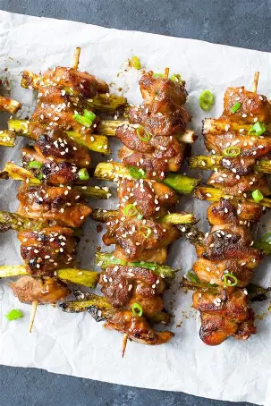
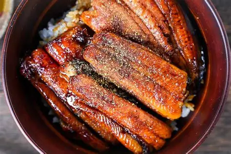

Introduction
Welcome to our curated list of food and drink recommendations near the Petty Building! Whether you’re
looking for a quick bite between classes, a cozy spot for a coffee date, or a place to grab dinner, we’ve
got you covered. We've hand-picked a selection of local restaurants, each offering a unique taste of what
the area has to offer. Let's dive in!
We’ve gathered the best spots, from grab-and-go sandwiches to fine dining, ensuring that there’s something
for everyone. With so many options so close to campus, you'll never be hungry again!
Each of these establishments has its own specialties that make it stand out, so be sure to try the dishes
we've recommended below!
Let’s explore!
Restaurant Recommendations
New York Pizza
Located at 337 Tate St, Greensboro, NC 27403, this place is known for its delicious pizza! Open from 11:00 am till Midnight. Whether you're in the
mood for a good old cheese pizza or craving chicken wings, this restaurant is a local favorite!
Cheese Pizza
A comforting dish that everyone loves!
Stromboli
This dish is perfect for those who love meat, cheese, and bread.

Chicken Wings
You can even get some fried chicken wings here!
Don
Located at 423 Tate St, Greensboro, NC 27403, famous for Japanese Cuisine. Opening hours: 11:00 am till 3:30 pm. You have a variety of options to pick from!

Chicken Yakitori
Skewered, grilled chicken pieces glazed with a delicious, slightly sweet tare sauce—crispy on the outside, juicy on the inside, and full of flavor with every bite.
Beef Bowl (Gyudon)
A hearty, comforting bowl of thinly sliced beef simmered in a savory-sweet broth, piled over fluffy rice, perfect for a quick, satisfying meal.

Unagi Don
Imagine tender, sweet grilled eel glazed with a rich soy-based sauce, served over a bed of steaming rice—an irresistible blend of smoky and savory.
Romeo's Vegan Burgers
Located at 413 Tate St, Greensboro, NC 27403, this hidden gem is a must-try for anyone who craves vegan cuisine. Hours: 11:00 am till 10:00 pm. From
Vegan Burgers to Oreo Shakes, this place has a variety of mouthwatering options!

Crispy Chicken Kale Salad
A fresh, crunchy kale salad topped with crispy plant-based "chicken," tangy dressing, and a perfect balance of textures and flavors for a light yet filling meal.

Chili Dog
A juicy, plant-based sausage loaded with spicy, savory chili and topped with all the classic fixings. A vegan twist on an iconic American classic.

Chili Cheese Fries
Golden, crispy fries smothered in hearty, savory chili and melted vegan cheese—a comfort food combo that’s both rich and satisfying.